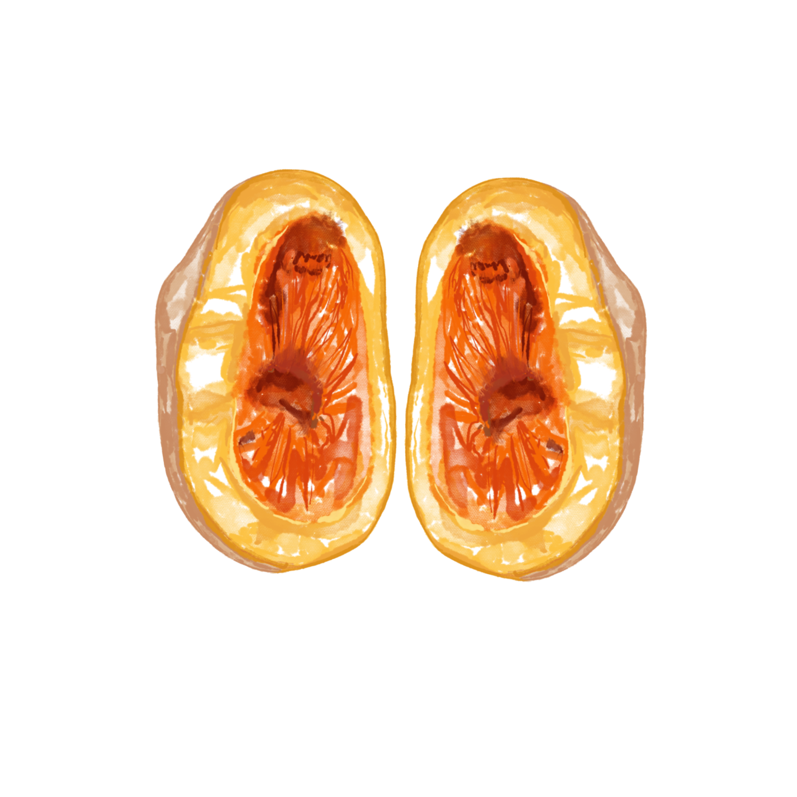
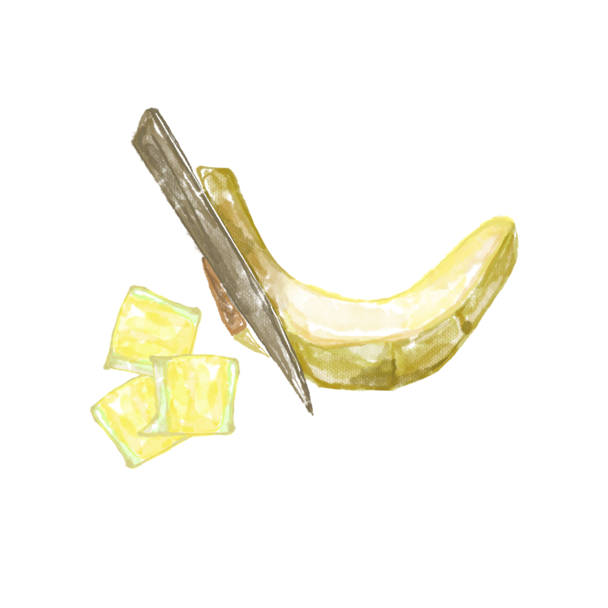
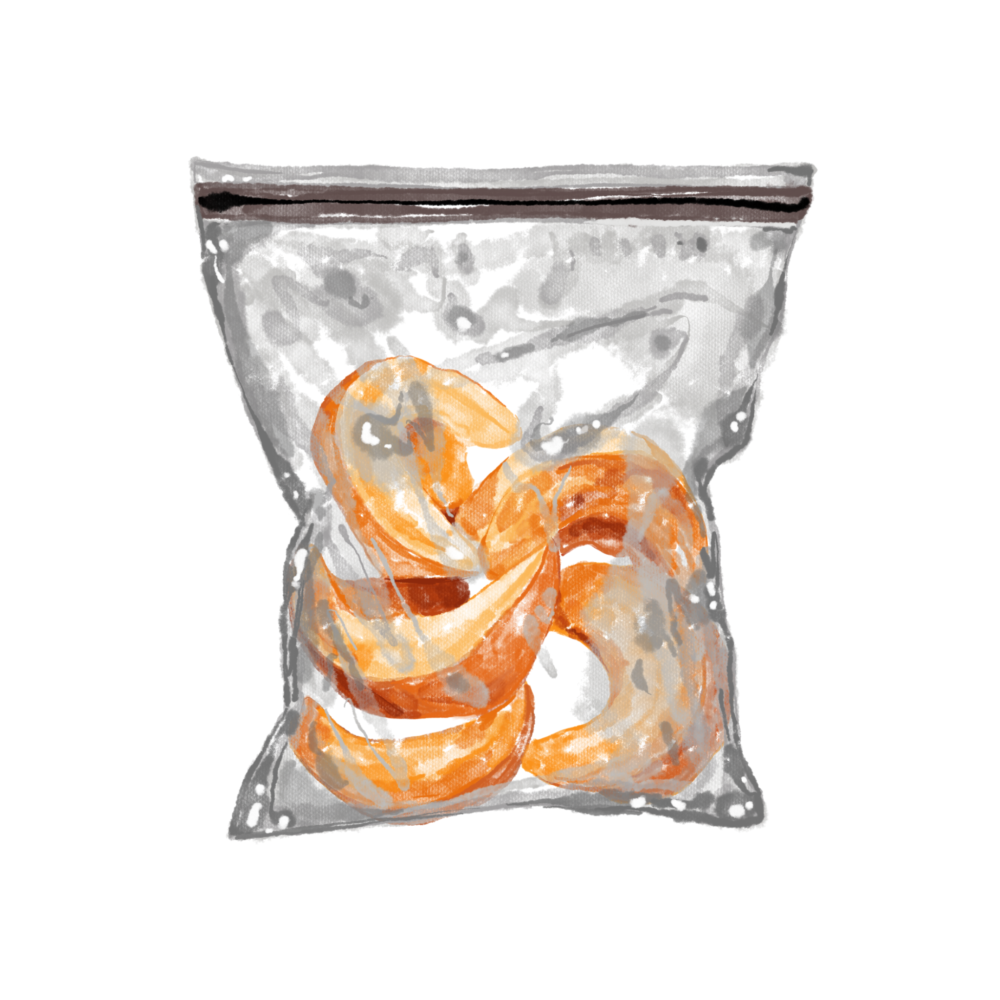
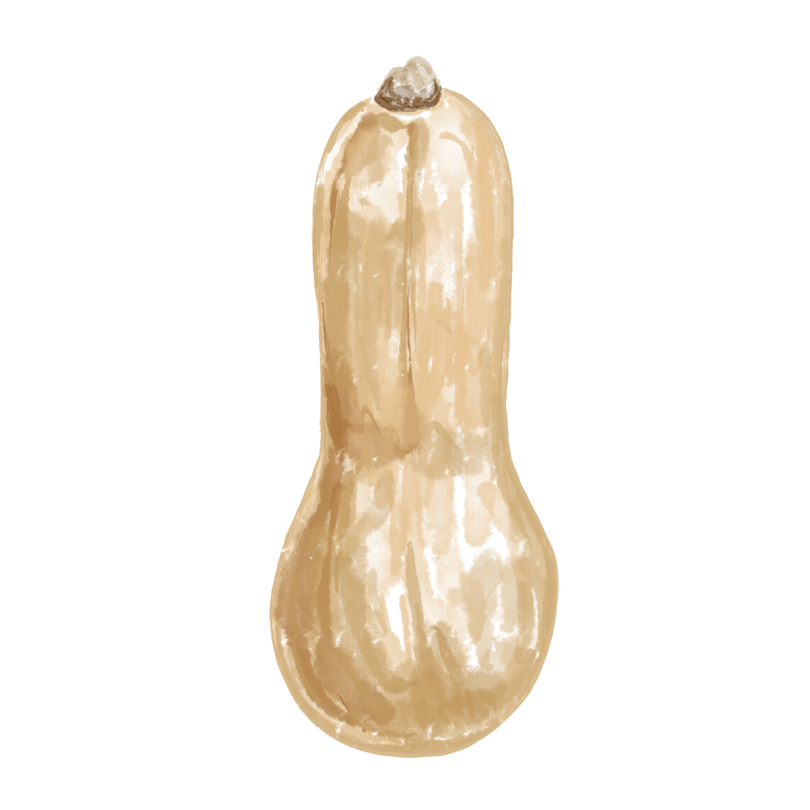
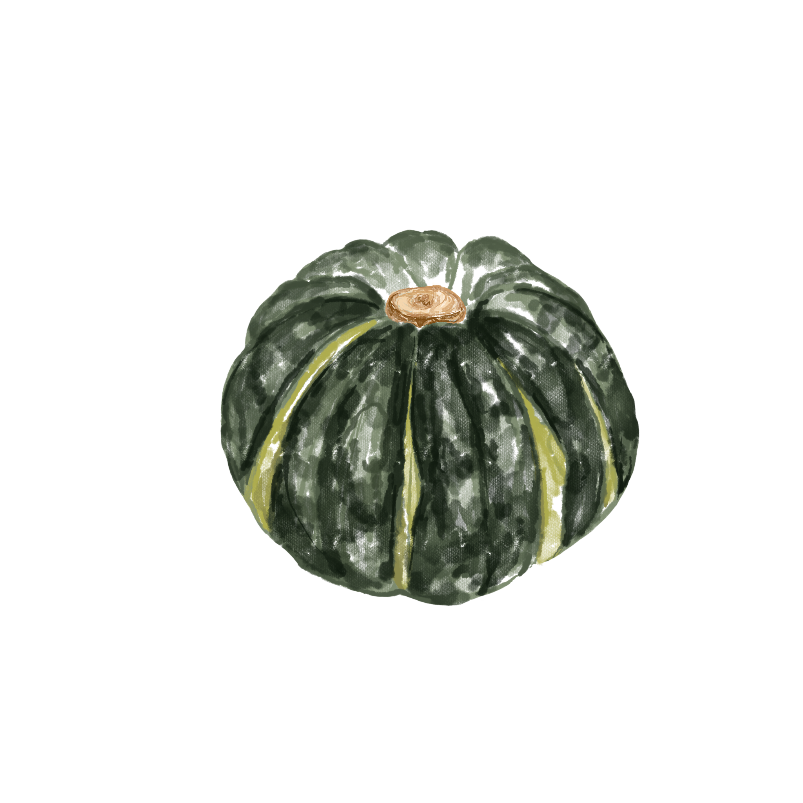
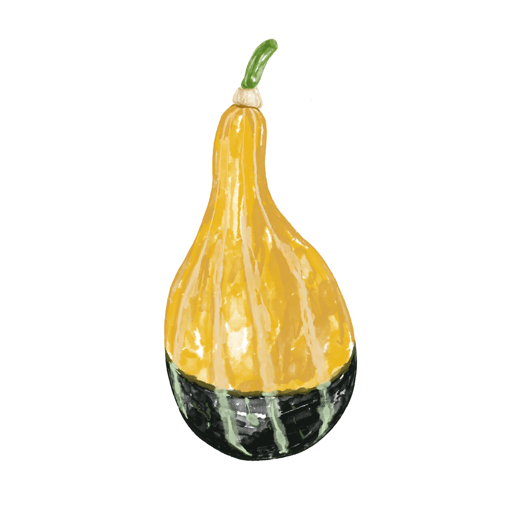

* 숟가락으로 호박씨를 뺀다
* 호박씨는 깨끗이 씻어야 볶아 먹을 수 있다

* 굴곡을 따라 잘라주면 자르기 쉽다
* 칼로 껍질을 벗기는데 벗기는게 어렵다면 과일 감자칼을 사용한다

* 한꺼번에 보관하기보다 소분하여 보관하는 것이 좋다
* 서늘하고 건조한 곳에 두면 약 6개월간 보관할 수 있다

땅콩을 연상시키는 모양을 가지고 있어 우리나라에서는 땅콩호박이라 부른다.
원산지이자 주산지는 미국으로 매사추세츠주 동부의 월섬(Waltham) 지역에서 최초로 개발 및 재배되었다고 알려져 있으며 본래 ‘월섬 버터넛(Waltham Butternut)’이라 불리던 종이었다.

서양계 호박의 한 품종으로 당도가 높고 밤 맛이 난다 하여 밤호박이라고도 한다.
풍부한 당질과 영양분에 비해 열량은 낮고, 식이섬유가 풍부하여 소화를 돕는다. 호박의 원산지는 명확치 않지만, 중남미 일대에서 파생된 것으로 보고 있다.

쥬키니호박이라고도 하고, 애호박보다 크고 통통하다 하여 돼지호박이라고도 부른다.
원산지는 미국 남부와 멕시코 북부이며, 유럽에서는 오래 전 부터 이른 봄에 가장 먼저 나오는 열매채소로 귀중하게 여겨 왔다. 일반 호박은 완전히 숙성한 열매를 먹는데 비해, 쥬키니는 개화한 뒤 5~7일 정도 지난 미숙한 열매를 먹는다.